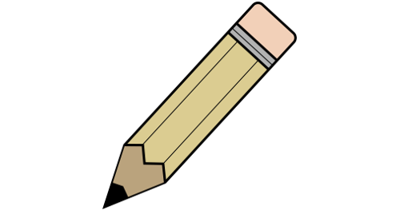
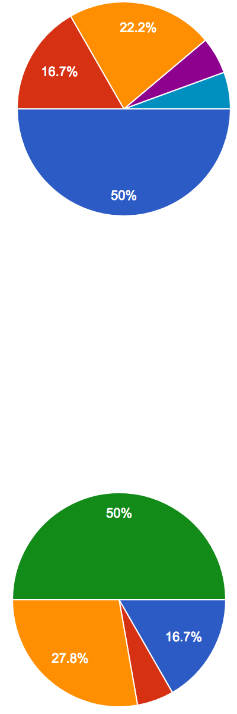
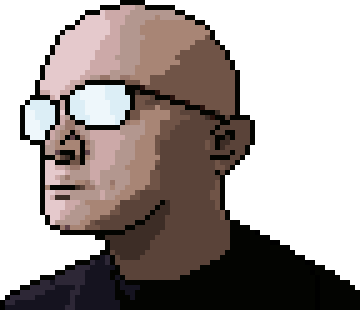

-
my development and design blog.
-

Josh Christofferson UX / UI FrontendBased out of
Denver, Colorado -
 a case study in desktop crowdfunding design.
a case study in desktop crowdfunding design. -
The description for this project was broad. I decided the first step should answer two questions:
- Is there a need out there that isn't being filled and could be by this project?
- What do crowdfunding donors actually want in a site?
- The Competition
There are a lot of crowdfunding websites already out there and many of them are quite good. I did a SWOT analysis of four big ones to see how to best shape this project’s major goals.
-
Strengths & Weaknesses Kickstarter
JustGiving
GoFundMe
GiveForward
Good Whitespace • • • • Clear Navigation ~ ~ ~ Adv. Searching ~ ~ Clear CTA • • • • Trust Validation ~ ~ ~ Fund Breakdowns External Links • Comments • • • The strengths and weaknesses clearly showed two major things I could use to really define this project:
- None of the sites give a really solid explanation of why groups need the amount they're requesting.
- None of the sites help me know whether or not the group I'm donating to has any kind of accountability.
OpportunitiesImpulse purchases and leverage of social media present a huge, mostly untapped avenue for crowdfunding. Were this a mobile project, I'd put huge effort into quick $1 random donations.Focusing on established charities and foundations rather than individuals would set this project apart and provide the missing validation.ThreatsThe market is fairly saturated with crowdfunding, so major effort would have to be put into marketing and drawing in donors.The transparency that would be aimed for in this project might also be impractical or even unatainable for some charities. Nevertheless, charities could disclose as much as possible or at least explain why they can't divulge such information. - User Personas & Stories
With two major goals nailed down, I turned to user personas and stories to get a sense for how to best go about fulfilling these needs.
A summary of what was found:
Charity Owners
- Motivations: Owners want to be able to reach larger audiences with little fuss and little need for specific training.
- Frustrations: Most onboarding processes take too long and have too much upkeep.
Potential Donors
- Motivations: Donors want to find a charity that suits them and quickly assess if they're worth the money.
- Frustrations: Looking up how valid a charity is usually relies on outside searching and can be frustrating and fruitless.
Armed with a clear view of a gap in the market and what users want, I put together a clearly defined features list for this project.
| As a charity owner I want to... |
| create an account. |
| display progress on reaching my monthly and annual goals. |
| view a list of people who donated and how much they gave. |
| monitor comments on my fundraiser paige. |
| As a donor, I want to... |
| sign up for an account. |
| browse local charities that I can donte to. |
| donate to a charity. |
| track my donations. |
| understand where my donation money is going. |
| know I can trust the charity I'm giving to. |
- A Name
It was finally time for a name and brand. Given the focus on trust and charities, I wanted the name to evoke the same feelings as trusted charities like Habitat for Humanity or the Make a Wish Foundation, but more broad since this would be an aggregate site, not a specific charity.
-
Charity Match
Charity Hub
OneWorld
Charity Trust
VeriCharity
Outstretched Hands
HelpNow
Helping Hands
Helping hands perfectly captured what I was looking for. The name gives a good sense of altruism and is short and memorable.
I love color theory. Green was the obvious choice for Helping Hands for two reasons:
- Green evokes money, health, and wellbeing; all things that fit with Helping Hands.
- Most of the competitors use green. People are comfortable when similar things look similar.
I decided to accent this with a slight off-white. White evokes cleanliness and purity. I also considered blue as it conveys solidity and trust, but decided to keep the branding relatively monochromatic for simplicity and logo application.
The logo was key in creating the brand for Helping Hands. The final design was chosen to resemble two hands reaching for each other, the whitespace between forming the distinctive “H”. This design is simple, works well in black and white as well as color, and is identifiable at both large and small scales.
The primary font for the site was chosen to be Montserrat. This sans-serif font is easily legible and closely resembles some of the default fonts, but is just different enough to stand out and give the site some personal flavor. It works particularly well for both titles and body text given its versatility in font weights and styles. Given this last point, I decided to not accent with a secondary font.
The layout and flow of Helping Hands was a crucial stage in development. Nothing drives away traffic faster than confusing, frustrating, or boring site design.
Particular emphasis was given to the onboarding process to make it as streamlined and efficient as possible. I used my knowledge of frontend programming and decided that a large amount of information could be gained by automatic processes rather than having the user input everything. This is especially true for charity owner accounts as a large amount of needed information must be made publicly available.
Attention was also given to make the donation process itself clear and straightforward. Inspiration for this was taken from sites like Amazon, which use only a few simple prompts before the user can pay.
I also conducted a user survey at this point to explore how to best handle a comments section for each charity.
- I give because it feels good to help others.I give out of a sense that I should be doing so.I give because I have a personal or family connection to the cause they support.Not sure. Sometimes something just catches my eye or interest.If the charity has a track record of putting the donation to good use.Because there is a need.
Yes, one visible only to the charity I'm donating to.Yes, a publicly visible one that everyone could see.No.Sometimes. Pros:
- Donor messages could help charities seem more personable.
- Charity owners can be bolstered by positive messages from the communities they serve.
- Donors can feel a greater sense of security that the organization they're donating to is legitimate.
Cons:
- Comment sections can quickly devolve into flamewars and junk advertising.
- People remember negative experiences more than positive ones and this could do more harm than good.
- Comment Section may be too high maintenance for some organizations to want to handle.
Hand-created sketches and Balsamiq were used to explore a large number of low-fidelity layout ideas before moving to high fidelity mockups. Layouts were designed to give hierarchical prominence to things like the donate button and to highlight the current donation goals. Ideally, users could view the page and find the most important information with a quick glance.
I created the high fidelity mockups at the same time as a style guide. While things like buttons and banners are definitely part of branding, I wanted that and layout to shape each other rather than forcing one to fit the other.
I paid special attention to editing information for charity owners. I decided that less tech-savvy users should be able to see exactly what their changes and additions would look like right as they were adding them. I didn’t want frustration over things moving or changing from what the creator thought it would be. Pinpointing layout to allow for this behavior took considerable planning. In the image below, note how the editing tools don't displace the white content box.
User feedback also came into play for this stage as well. 5 second tests were administered to determine the logical layout and placement for buttons and key pieces of information. The “donate” button in particular moved around several times during development until it was both easy to find and clear what was being donated to.
The final deliverable is a full scale interactive mockup using InVision.
Even though the project requirement was for a desktop site, I felt that a mobile design for helping hands would have had greater impact. I created a quick mockup of a charity page in mobile to show how to this could work. I also wanted to explore how impulse “one-click” purchases could be worked into the site as its a huge avenue for revenue.
I personally learned two major lessons from this project:
- The extreme value in creating a cohesive style guide along with the branding very early in the design process. I could have saved a lot of time from tweaking and re-tweaking elements repeatedly.
- The value of nailing down that complete listing of user stories and MVP very early in the project. There were numerous times I wanted to add features that sounded good, but kept myself grounded in the MVP, sticking to what I knew was important.
-
Cornucopiaa case study
-
Contents
-
-
-
-
-
-
-
-
-
Airport Navigatora case study
-
Contents
-
-
-
-
-
-
-
-
-
The Portfolioa case study
-
I'm a former teacher turned web designer and developer. I've had some web design experience in the past and decided it was time for a career shift to go back to this.
-
Usability Hub Sketch InVision Draw.io GitHub Atom Illustrator Photoshop
I went through a large number of designer portfolios before I started. I wanted to get a feel for what things were required and what things could be bent to creative individuality.
I saw a wide variety of design in portfolios and decided to go with something that would show off CSS Grid as well as being unique.
What content to put on the portfolio site was mostly laid out by Bloc. I added a blog at the recommendation of my mentor and wanted to include this case study on the portfolio itself to show my thoughts on how I made this.
A.
| As a charity owner I want to... |
| create an account. |
| display progress on reaching my monthly and annual goals. |
| view a list of people who donated and how much they gave. |
| monitor comments on my fundraiser paige. |
The logo was explicitly designed to be both professional and personal, showing that I'm not a company, I'm an individual.
Given my background teaching science, I wanted to show my analytical side as well as my creative side. The clean, square motif was how I did this.
Everything else fell into place based on these. The font (Exo 2) mimics the signature with thin clean lines. Colors were designed to give the different sections of the site prominence. The animated icons were designed to mimic the signature. (And show off the coolness of Vivus.)
The very first principle I set down was that nothing should be more than 2 clicks deep. One to open a project, one to expand images.
Major effort went into the HTML architecture. I did a refactoring partway through to lay out content to better aid accessibility.
Testing focused around intuitive interface. Particularly on what elements could be clicked and what would happen upon clicking. I also wanted to make sure the visual heirarchy is clear and that scaled text is always legible and fit the surroundings well.
The final deliverable is a full scale interactive mockup using InVision.

Like all personal growth projects, my ideas and style have changed throughout this process. I find it hard to look at this site without being subjective and seeing things I wish to change. While I'm sure I'll eventually rewrite the entire site, I do have a few short term goals:
- Some code refactoring. I'd especially like to split the css up into multiple files
- Add more subtle animated touches to many of the elements. Text fade-ins in particular.
- Refinement and styling to the blog. At the moment it uses a simple wordpress template with little personality. This can certainly be made better.
- Add a few more projects to better show my array of skills.

- 
-
The Vale of ChildhoodQuest: reach adulthoodSkills honed:
- Integrity
- Strong work ethic
- Critical thinking
- Playing and creating games of all kinds
- Love of B movies
The Forest of CollegeQuest: BA in Astrophysics
MA in Secondary Sci EdSkills honed:- Data analysis
- Proper testing procedure
The Mountains of LASPQuest: Programmer / scientist / webmasterSkills honed:- Programming: IDL, js, HTML, PHP
- Large scale data manipulation
- Web design
The Swamp of Fort Lupton SchoolsQuest: HS science teacherSkills honed:- Immunity to deadlines
- Cross-department collaboration
- Feedback and refactoring proficiency
Wed TownSide QuestWife joins!The Town of LiteratureQuest: Write & publish a bookSkills honed:- Large-scale project management
- Breaking projects into workable steps
The Hills of BelleviewQuest: HS science / calculus teacherSkills honed:- Team player mastery
- Presentation skills mastery
BabyvilleSide QuestDaughter joins!The Lakes of WyzantQuest: Independent tutorSkills honed:- Interpersonal communication
- Efffective and adaptive strategy
KidtownSide QuestDaughter joins!The Plains of TerraXMLQuest: Software engineering contractorSkills honed:- Programming: Java, Xquery, Jquery, C#
- JIRA workflow
The Desert of HSSQuest: Security officerSkills honed:- Adaptability and quick learning
- Attention to detail and protocol
The Unknown FutureQuest: Unknown!Possibly useful skills:
- Unity3D (4 min demo)
- Designer Track through Bloc. Experience with:
- InVision, Balsamiq, Sketch, and Photoshop (sample)
Here's a bit of mine.